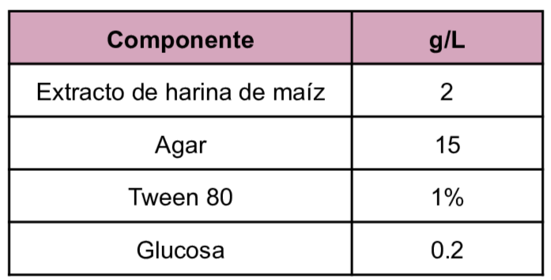
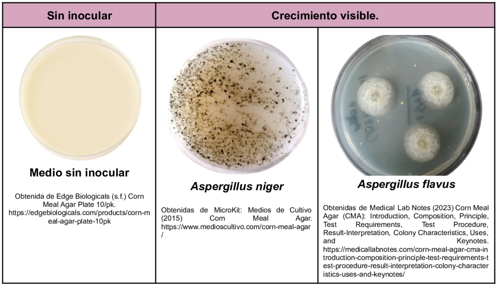

Medio utilizado para el estudio de la formación de micelio o pseudomicelio además de la producción de clamidosporas de
Candida
La infusión de harina de maíz proporciona carbohidratos y aminoácidos, el medio se puede enriquecer con polisorbato (Tween) 80 para la estimulación de la formación de clamidosporas en
Candida albicans, Candida stellatoides y Candida tropicalis.
Se puede adicionar glucosa para la cromogénesis de especies de
Trichophyton.
Composición

pH a 25°C 6.0±0.2
Resultados Posibles
El crecimiento puede variar dependiendo del microorganismo inoculado se pueden tener crecimientos tales como:
- Candida albicans: Colonias blancas y lisas
- Trichophyton rubrum: Coloración roja en el reverso de la colonia

Referencias
Medios de Cultivo (2015) Corn Meal Agar. https://www.medioscultivo.com/corn-meal-agar/
Medical Lab Notes (2023) Corn Meal Agar (CMA): Introduction, Composition, Principle, Test Requirements, Test Procedure, Result-Interpretation, Colony Characteristics, Uses, and Keynotes. https://medicallabnotes.com/corn-meal-agar-cma-introduction-composition-principle-test-requirements-test-procedure-result-interpretation-colony-characteristics-uses-and-keynotes/